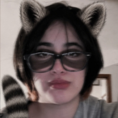
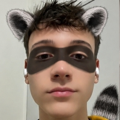
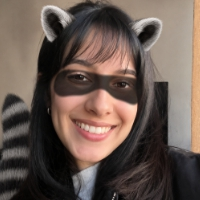

Elegimos los mapaches porque son animales visualmente reconocibles, curiosos y con comportamientos interesantes. Como son tan lindos tuvimos que hacerles su propia página.
Lamentablemente en paises como EEUU son considerados una plaga por culpa de su distribucion en abitabs donde no pertenecian, haciendo que haya sobrepoblacion de los mismos.
Son cazados, sus pieles y sus colas usadas como premios y accesorios sin piedad alguna.
Cuando son tan tiernos!

Alumna de capacidades altas que no usa, su animal favorito es el mapache y por eso dio la idea
Introvertida, divertida y adicta a la procrastinacion ^^

Le encantan los perros, los videojuegos, medio vago pero con buenas intenciones, bye :b

Profesional en tomar café, consentir gatos y analizar series con la misma seriedad con la que elijo qué voy a comer mientras la veo.
Elegimos los mapaches porque son animales visualmente reconocibles, curiosos y con comportamientos interesantes. Como son tan lindos tuvimos que hacerles su propia página.
Lamentablemente en paises como EEUU son considerados una plaga por culpa de su distribucion en abitabs donde no pertenecian, haciendo que haya sobrepoblacion de los mismos.
Son cazados, sus pieles y sus colas usadas como premios y accesorios sin piedad alguna.
Cuando son tan tiernos!